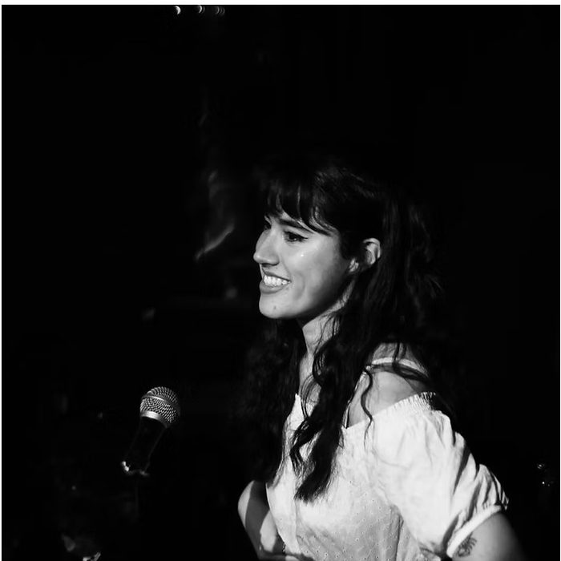
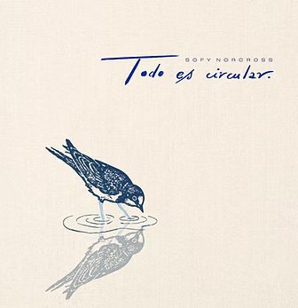
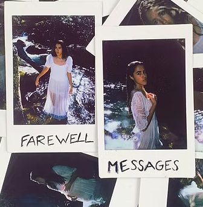
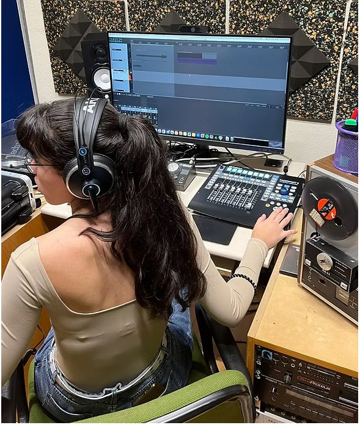

¿Quién soy?
Sofy Norcross nace de la necesidad de crear y expresar ideas musicalmente. En un inicio, no fue concebido como un proyecto de largo recorrido, sino que nació para poder publicar cuatro canciones que hasta entonces se habían escondido en la retaguardia de su habitación. Esas cuatro canciones se publicaron en 2024 en el EP Farewell Messages .
Tras su publicación y el ánimo recibido, Sofy Norcross comenzó a tomar forma como un proyecto artístico propio, dando lugar a nuevas canciones y realizando sus primeros conciertos en salas como la Vesta o Maravillas.
Su segundo EP, Todo es circular , supone una evolución en el sonido y en la forma de entender el proyecto. Compuesto por seis canciones, combina elementos del indie pop y el synth pop con sonidos electrónicos y una producción más desarrollada.
Publicaciones:

El EP está compuesto por seis canciones, creadas con la intención de dar forma a un trabajo coherente en su conjunto. En él, la idea de lo cíclico atraviesa el proyecto en distintos planos: desde lo visual hasta lo musical.
A nivel emocional, Todo es circular transita entre el miedo a la incertidumbre y al propio crecimiento, y la aceptación de ese temor como una forma de rendición ante lo inevitable. Todo ello se ve trasladado al plano sonoro a través de texturas, melodías y ritmos que reflejan esa evolución emocional.
Hay algo malo en mí es un single de pop-rock con pequeñas melodías de guitarra y piano y una importante presencia de la batería. A nivel emocional, habla del bloqueo que pueden generar las creencias limitantes que otras personas proyectan sobre nosotros y de cómo, con el tiempo, podemos llegar a hacerlas nuestras.

Compuesto por cuatro canciones, nace de una etapa de cambios y emociones difíciles de ordenar, y funciona como una despedida a aquello que ya no podía seguir formando parte de su vida. El EP recoge los primeros pasos del proyecto y muestra una faceta más cercana al indie y a la canción de raíz acústica.
Más allá de Sofy Norcross
Además de desarrollar su proyecto como compositora y artista, Sofía Díaz (Sofy Norcross) es musicóloga y técnica de sonido, con formación en piano clásico y graduándose del Grade 8 Practical de ABRSM . Su formación le permite acercarse a la música desde diferentes perspectivas, tanto creativa como técnica y académica. También se dedica a la enseñanza musical y pianística, y a la investigación musicológica, trabajando como Personal de la Ayudante a la Investigación en SonoLAB (UCM).
